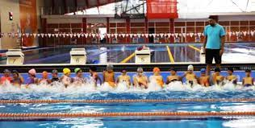

-MERSİN'de YAYGIN OLAN SPORLAR-
Mersin özellikle atletizm alanında önemli başarılar elde etmiştir. Olimpiyat Şampiyonu güreşçi Ahmet Kirişçi Mersinlidir ve Mersinli Ahmet olarak bilinir.
Ayrıca Mersinli bir atlet olan Nevin Yanıt, Barcelona'da düzenlenen 2010 Avrupa Atletizm Şampiyonası'nda 100 metre engelli koşusunda yarı final ve finalde kendisine ait Türkiye rekorlarını yenileyerek 12,63 saniyelik derecesiyle Avrupa Şampiyonu olan sporcudur.
Mersin, Türkiye tarihinde 2. kez 20-30 Haziran 2013 yılında düzenlenmiş olan Akdeniz Oyunları'na ev sahipliği yapmıştır.[1]
Düzenli olarak Yamaç Paraşütü ve Doğa Sporları Festivali düzenlenir. Arslanköy, yamaç paraşütüne en uygun doğal ortamı oluşturmaktadır
